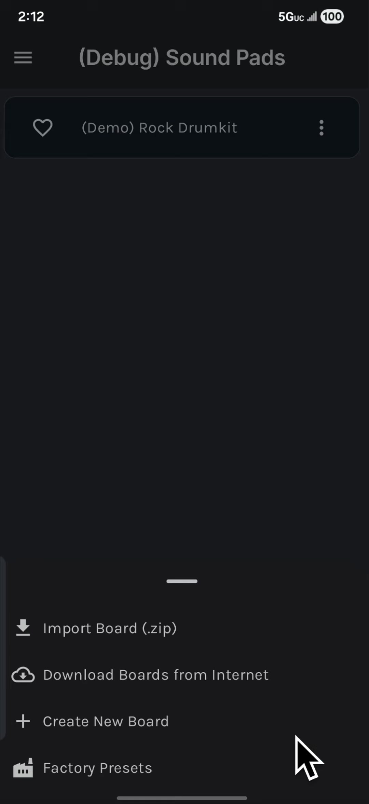
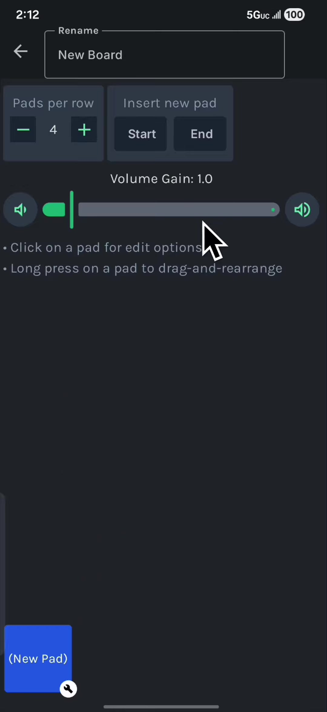
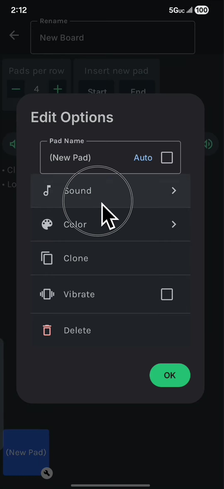
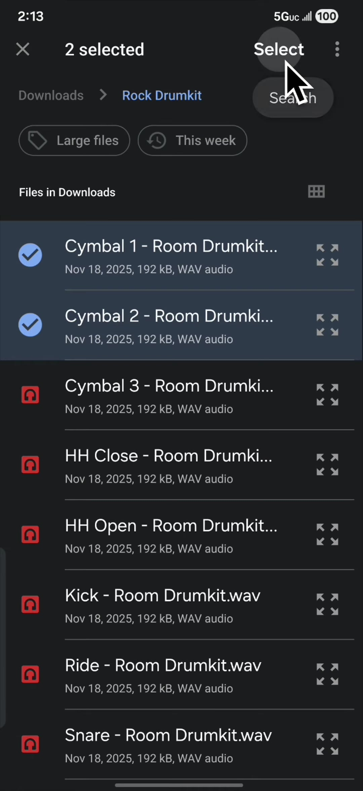
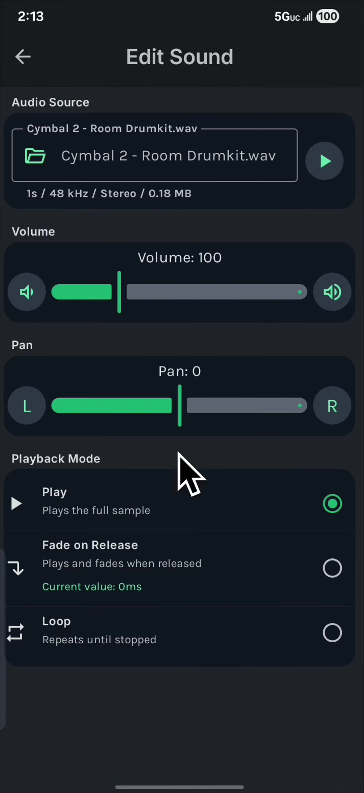
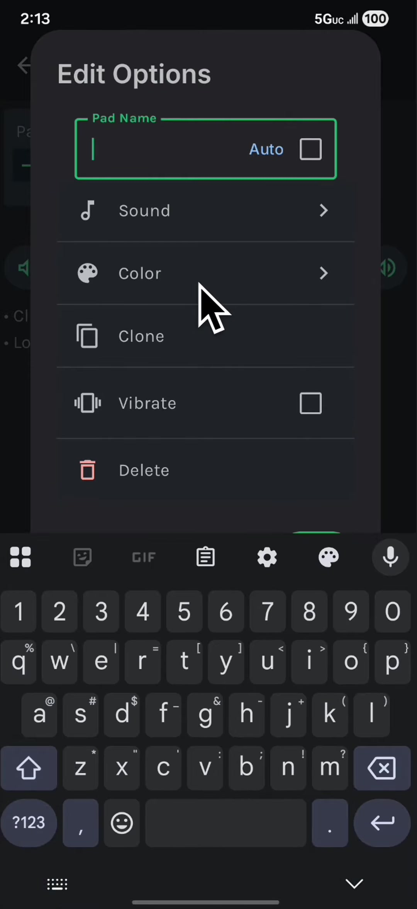
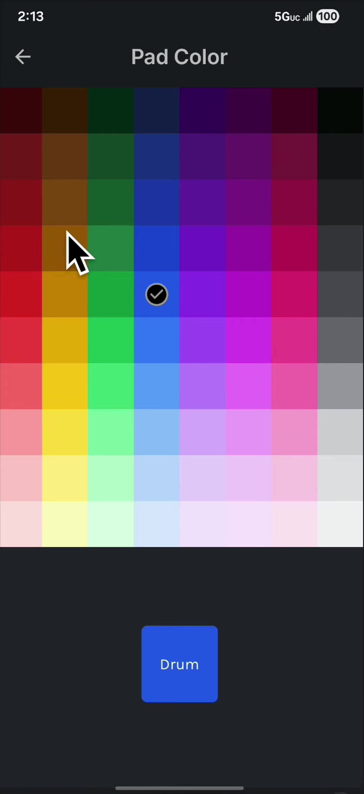
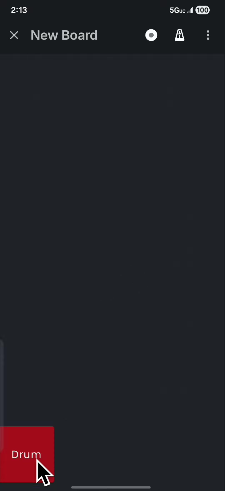
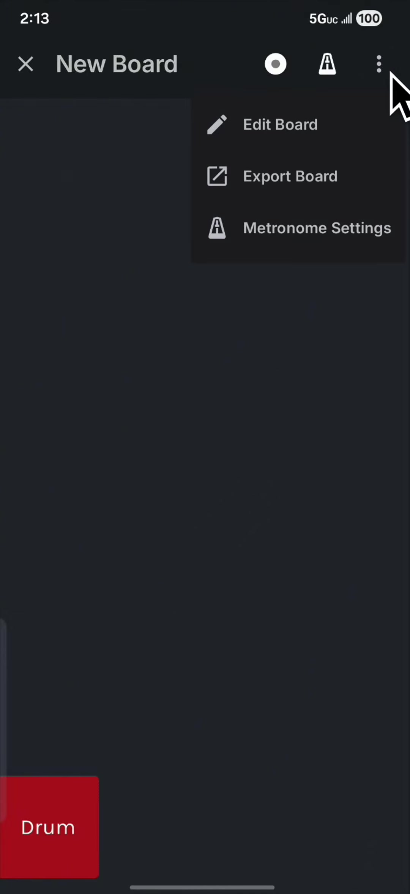
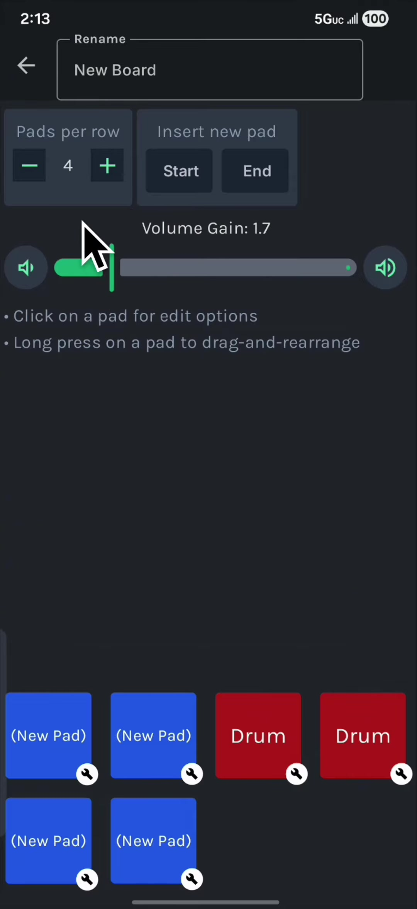

1. Add a new board
From the board list, tap Add Board and choose Create New Board.

Build your own board, add samples, name and color a pad, then adjust the board layout when you need to.
From the board list, tap Add Board and choose Create New Board.

The new board opens in edit mode. Tap a pad at the bottom to start customizing it.

In Edit Options, choose Sound. Use this menu later if you want to clone, vibrate, rename, recolor, or delete the pad.

Tap the wave button, choose one or more samples, then tap Select.

Tap a sample to adjust its volume, pan, and playback mode. Tap Back when the sample plays the way you want.

Return to Edit Options and enter a clear pad name.

Pick a pad color that makes the sound easy to spot while you play.

Tap OK, then Back. Your pad is ready on the board.

Open the three-dot menu and choose Edit Board when you want to make more changes.

Add pads, clone an existing pad, change the overall volume, set pads per row, or rename the board.
Tap Back when you are done. The board is ready to use.
